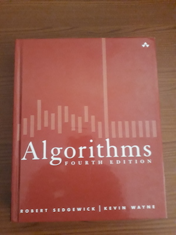

DISCLAIMER: I have NOT read all the books listed here cover to cover, but I keep referring to MOST of them from time to time.
This is the defacto 'Algorithms' book that deals superbly with the subject. A must have for anyone who wants to understand the underlying concepts in software engineering.
This is another excellent book on Algorithms. It can act as an alternative to the one above.
Explores data structures and algorithms in a more thorough way. Even Google recommends it.
This is an excellent book that introduces the concept of software design patterns in an easy and understandable way.
A great book for developers who would like to take their software engineering skills to the next level.
This book by 'Uncle Bob' is an essential tool for anyone who wants to understand agile software engineering and craftsmanship.
Another fantastic book for practicing software engineers who would want to take their game a notch higher.
At one time or another in their careers, software engineers have to deal with legacy code. And that's why this book must be an indispensable addition to any developer's library.
This is a book from one of the pioneers of the Object-Oriented technology.
A great introductory book on the field of software engineering.
A superb book for anyone who wants to master the professional practice of sofware development.
Software testing is the most crucial step in software development, and this book teaches you testing best practices.
A fantastic book on the unified modeling language for any serious software developer.
Another great book on the unified modeling language. A good supplement to Fowler's book.
This is a very thorough book on how to design enterprise-level systems for production environment.
Python is very popular and this is the best introductory book on the language that I have ever come across. And the author has a great sense of humor!
At over 1500 pages, this is the most comprehensive book on Python that you can find around. Mark Lutz is considered an authority on Python, having started writing about the language in the early 1990s.
Another Python gem from Mark, the book covers the major application areas of the language. The fourth edition of this book has over 1600 pages.
This book discusses specific ways of writing better Python code. An excellent read for a Python developer who cares about his code.
This book introduces several techniques of testing python code.
TDD makes software great and bug-proof. This book will show you how to write excellent tests for your Python code.
This is by far the best book that I have come across covering the concepts of algorithms and data structures using Python.
Do you want to know how the most common design patterns are implemented in Python? Then this is the book for you.
This book explores Python web development using the popular Django Framework.
This book covers C exhaustively and introduces C++ as well.
This book explores modern C, especially C11.
A thorough book on the most common algorithms using the good old C.
A great introduction to the realm of Systems Programming using C.
This book covers C++ in a very clear and understandable way. It is one of the most authoritative texts on C++.
A comprehensive book on data structures and algorithms using C++.
Yet another great book on data structures using C++.
This is a book for those developers who already have some experience with C++ and would like to transition to a professional level.
This book explores some of the best rules and guidelines for writing great code in C++.
Scott Meyers is a leading C++ figure and is widely known as an authority on the language. This book explores the new features in C++11 and C++14
Andrei does a great job of introducing the best design practices for Modern C++.
A great book on writing multithreaded code using C++.
A good beginner on Object Oriented Programming using Java.
A great book for someone who has some experience with Java already.
A book for experienced Java developers who want to be effective in their programming work.
An authoritative book on data structures and algorithms using Java.
A comprehensive book on JavaScript.
A great book on how to write better JavaScript code.
Tired of the weird parts of JavaScript? This book will tech you the good parts.
With JavaScript making a move to the server-side, the study of data structures becomes important to JavaScript developers.
This book explores Node, the JavaScript server-side platform.
A great book for a developer who has some experience with PHP under his belt.
This book avoids the nasty parts of PHP. It teaches you how to write great PHP code.
A great book for advancing your knowledge of PHP.
Explores design patterns in PHP.
A great introduction to the Go programming language from Google.
For anyone who wants to take his Go knowledge to the next level.
This is a great book on Rust, the new systems programming language from Mozilla.
Another fantastic book on Rust. Jim Blandy is a Rust guru himself.
This book introduces Erlang, the best language for distributed systems programming from Ericsson.
This is a great on Erlang by one of the original designers of the language.
Yet another fantastic book on Erlang. Deals more with the application areas of the language.
This book shows you how you can leverage your knowledge of Erlang for web development.
This book introduces database design concepts in a more friendly way.
All you need to know about structured query languages is here.
A concise and great introductory book on the popular MySQL database system.
This is one of best books on PostgreSQL.
NoSQL databases have become ubiquitous recently and MongoDB is one of best in that category.
Another great NoSQL database written using Erlang.
HBase is the open-source implementation of Google's BigTable.
This is the defacto book on Hadoop and its entire ecosystem.
The best book on the in-memory NoSQL store.
A fantastic discussion of graph databases using neo4j.
The book on Apache Spark out there.
Covers REST in a very friendly way.
If you want to program closer to the metal, then this is a great introductory book on assembly programming. Professor Randall is recognized as a great teacher of assembly language programming.
If you want to take your assembly knowledge a notch higher, then this is the book for you.
No one can deny that Linux powers virtually the entire Internet. It is also available on the Desktop through various distributions. This book is a friendly introduction to the inner workings of Linux.
This book covers the important concepts of Kernel development by one of the Linux Kernel developers.
This book teaches how to write shell scripts that run on the bash shell.
This is the definitive book on the design and implementation of operating systems. It uses Minix, the microkernel-based OS that was designed by the author of the book for teaching purposes.
This is an excellent book that gives a modern perspective of operating systems using several case studies.
This is arguably the best book out there that covers the most important concepts in distributed systems in a most friendly way. Google is discussed as a case study.
Another fantastic book on distributed systems, but much more technical.
A great introduction to the subject of multiprocessor programming.
An excellent look at how Python implements distributed computing concepts.
A great introductory book on machine laerning that uses Python.
A more technical book on machine learning.
A great introduction to the entire field of information security. A must have for anyone who cares about security at all.
Covers security in Web Applications in great depth.
A fantastic introductory book on computer game programming.
Develop fantastc games like Tic Tac Toe and Black Jack while you learn C++ as well.
Want to know how your favorite video games are designed? If yes, this is the book for you.
A gentle introduction to the field of hacking and pen testing.
A great introductory book on ethical hacking using Python.
For those who would like to venture deeper into the world of hacking, this is the book for you.
The best book out there on Computer memory forensics.
This is the best book on computer networks that I have ever come across.
Another fantastic book by Professor Tanenbaum that covers computer architecture in great depth.